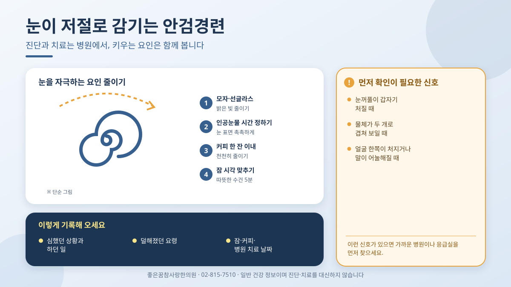

이종호 한의사 감수좋은꿈참사랑한의원 대표원장 (한의사 면허번호 19769)발행 2026-11-26 · 수정 2026-11-26
이 글의 차례
횡단보도 앞에서 신호를 기다리는데 눈이 자꾸 깜빡입니다. 신호가 바뀌어 건너려는 순간 두 눈이 꽉 감겨 한 발 내딛기가 망설여집니다. 손가락으로 눈썹 옆을 살짝 누르면 조금 나아지는 것 같아, 어느새 길을 걸을 때마다 이마에 손을 얹고 다니게 되었다는 이야기를 진료실에서 듣습니다.
이렇게 눈 주변 근육이 제 뜻과 상관없이 오므라들어 눈이 자주 깜빡이거나 감기는 상태를 안검경련이라고 부릅니다. 흔히 겪는 눈 밑 떨림과 이름이 비슷해서 헷갈리기 쉽지만, 모습과 흐름이 꽤 다릅니다. 대개 양쪽 눈에 함께 나타나고, 시간이 지나며 눈을 감는 힘이 점점 세지는 경우가 많습니다.
처음에는 눈이 부시고 뻑뻑해서 깜빡임이 늘었다고 여기는 분이 많습니다. 그래서 인공눈물만 넣으며 몇 달을 보내다가, 눈이 감기는 시간이 길어지고 운전이나 텔레비전 보기가 어려워지면서 진료실을 찾으십니다. 주변 사람이 일부러 윙크하는 줄 알고 오해를 받는 일도 있습니다.
안검경련은 신경과나 안과에서 진단과 치료를 받는 것이 먼저입니다. 저는 그 치료를 이어 가시면서, 눈 피로와 긴장, 잠처럼 증상을 키우는 생활 쪽 요인을 함께 살피는 역할을 맡는다고 말씀드립니다.
안검경련은 어떤 모습으로 나타나나요?
처음에는 깜빡임이 잦아지는 정도로 시작하는 경우가 많습니다. 눈이 부시거나 뻑뻑한 느낌이 함께 오고, 밝은 곳이나 바람이 부는 곳에서 더 심해집니다. 시간이 지나면서 눈을 꽉 감는 시간이 길어지고, 이마와 눈썹까지 찡그리듯 움직이기도 합니다.
증상이 심해지는 상황이 비교적 뚜렷한 편입니다. 햇빛 아래, 길을 걸을 때, 운전할 때, 텔레비전이나 화면을 볼 때, 사람들 앞에서 긴장할 때 심해지고, 누워 있거나 노래를 부르거나 말을 할 때는 조금 덜하다고 말씀하시는 분이 많습니다. 잠든 동안에는 대개 나타나지 않습니다.
눈썹 옆이나 관자놀이를 손가락으로 가볍게 누르거나, 입을 벌리고 하품하듯 하면 잠깐 눈이 편하게 떠지는 경우도 있습니다. 이런 작은 요령을 스스로 찾아 쓰고 계신 분이 많은데, 진료할 때 알려 주시면 상태를 이해하는 데 도움이 됩니다.
왜 눈이 저절로 감기게 될까요
안검경련은 눈을 감는 근육 자체가 약해진 것이 아니라, 그 근육에 움직이라고 신호를 보내는 뇌 쪽 조절이 예민해진 상태로 이해되고 있습니다. 아직 원인이 모두 밝혀지지는 않았고, 여러 요인이 겹쳐 시작되는 것으로 봅니다. 증상을 키우는 요인으로 자주 이야기되는 것은 이렇습니다.
- 안구건조나 눈 표면 자극으로 눈이 자주 부시고 시린 경우
- 밝은 빛, 바람, 화면을 오래 보는 환경
- 잠이 부족하거나 자주 깨는 경우
- 긴장과 걱정이 이어지는 시기
- 카페인을 많이 드시거나 술을 자주 드시는 경우
- 일부 약을 드시며 증상이 시작되거나 심해진 경우
이 요인들은 원인이라기보다 이미 예민해진 조절을 더 흔드는 쪽에 가깝습니다. 그래서 같은 분도 잠을 잘 잔 날과 설친 날, 마음이 편한 날과 쫓기는 날의 증상 차이가 크게 나타나는 경우가 많습니다.
한의학에서는 근육이 저절로 떨리고 오므라드는 것을 바람이 움직인다는 뜻의 풍에 비유하거나, 혈이 부족해 근육을 제대로 적셔 주지 못한다고 표현하기도 합니다. 진찰에서 쓰는 전통적인 설명 방식이며, 진단은 신경과와 안과 진료를 바탕으로 합니다.
눈꺼풀 떨림, 반측안면경련과는 어떻게 다른가요?
가장 흔한 눈꺼풀 떨림은 한쪽 눈 밑이나 윗눈꺼풀이 파르르 떨리는 것으로, 눈이 감기지는 않습니다. 피곤하거나 커피를 많이 마신 시기에 며칠에서 몇 주 나타났다가 저절로 가라앉는 경우가 많습니다. 안검경련은 눈이 실제로 감기고, 대개 양쪽에 나타나며 오래 이어지는 점이 다릅니다.
반측안면경련은 얼굴 한쪽의 눈가와 입꼬리, 뺨이 함께 씰룩이는 상태입니다. 눈에서 시작해 입가로 번지기도 하고, 잠든 동안에도 나타날 수 있습니다. 한쪽 얼굴만 움직인다면 반측안면경련 쪽을 생각해 신경과 진료를 받아 보시길 권합니다.
눈꺼풀이 처져 눈을 뜨기 어려운 것은 근육이 오므라드는 것이 아니라 들어 올리는 힘이 약해진 경우입니다. 이때는 눈을 뜨려고 이마에 힘을 주게 되고, 오후로 갈수록 처짐이 심해지기도 합니다. 안검경련과는 살펴볼 방향이 달라서 안과나 신경과 진료가 필요합니다.
아이가 눈을 자꾸 깜빡이거나 찡긋거린다면 틱이나 눈 알레르기, 시력 문제를 먼저 생각해 봅니다. 아이에게 나타나는 깜빡임은 어른의 안검경련과 흐름이 달라서 따로 살핍니다.
생활이 불편해질 때 함께 챙길 것
안검경련이 심해지면 눈이 감기는 순간 앞을 볼 수 없어 계단, 횡단보도, 운전에서 위험할 수 있습니다. 증상이 잦은 시기에는 운전을 줄이고, 계단을 오르내릴 때는 난간을 잡는 습관을 들여 주세요. 길을 걸을 때는 챙이 있는 모자와 선글라스가 눈부심을 덜어 줍니다.
남들이 오해하지 않을까 신경 쓰다 보면 긴장이 커지고, 긴장이 커지면 다시 증상이 심해지는 흐름이 생기기 쉽습니다. 가까운 사람에게는 지금의 상태를 짧게 설명해 두시는 것도 마음의 짐을 덜어 줍니다. 혼자 숨기려 애쓰지 않으셔도 괜찮습니다. 상태를 아는 사람이 곁에 있으면 길을 걸을 때도 마음이 한결 놓입니다.
화면 작업이 많은 분은 모니터 밝기를 낮추고, 화면을 창과 직각이 되게 두어 반사를 줄여 보세요. 글자 크기를 키우면 눈을 찡그리는 시간이 줄어듭니다. 업무 중 짧게 눈을 감고 쉬는 틈을 정해 두는 것도 도움이 될 수 있습니다.
계절과 시기에 따라 달라지는 모습
겨울에는 찬바람과 건조한 난방 공기 때문에 눈 표면이 쉽게 마르고, 그만큼 깜빡임과 눈 감김이 잦아졌다고 말씀하시는 분이 많습니다. 바람이 부는 날 외출할 때는 보호 안경이나 선글라스로 바람을 막고, 실내에서는 습도를 조금 높여 보세요.
봄과 여름에는 햇빛이 강해지고, 꽃가루와 미세먼지로 눈이 가렵고 시린 날이 늘어납니다. 이런 계절에는 외출 뒤 미지근한 물로 눈가를 부드럽게 씻고, 눈을 비비지 않도록 신경 써 주세요.
연말이나 명절처럼 모임이 많고 잠이 흐트러지는 시기, 이사나 직장 일로 마음이 바쁜 시기에는 증상이 한동안 심해졌다가 생활이 안정되면 덜해지는 흐름을 겪는 분도 계십니다. 이런 흐름을 미리 알고 계시면 증상이 심해진 날에도 덜 당황하실 수 있습니다.
주사 치료를 받는 분은 치료 효과가 줄어드는 시기에 증상이 다시 늘어나는 것을 느끼시곤 합니다. 그 시기에 일정이 몰리지 않도록 미리 계획을 세워 두면 생활의 불편을 줄이는 데 도움이 됩니다.
집에서 해 볼 수 있는 간단한 자기 점검
일주일 정도 아래 질문에 답해 보시면 상태를 정리하는 데 도움이 됩니다.
- 한쪽 눈인가요, 양쪽 눈인가요?
- 눈만 감기나요, 입가나 뺨도 함께 움직이나요?
- 밝은 곳, 걸을 때, 화면을 볼 때 더 심한가요?
- 누워 있거나 말을 할 때는 덜한가요?
- 잠을 설친 날, 긴장한 날 더 심한가요?
- 눈이 뻑뻑하고 부신 느낌이 함께 있나요?
증상이 나타날 때 가족에게 부탁해 짧은 동영상을 찍어 두시면 진료 때 큰 도움이 됩니다. 진료실에서는 긴장해서 오히려 덜 나타나거나 더 심하게 나타나는 경우가 있어, 평소 모습을 보여 주는 영상이 상태를 이해하는 데 좋습니다.
먼저 이렇게 여쭙니다
처음 오시면 저는 대략 이런 순서로 여쭙니다. 미리 떠올려 오시면 이야기가 훨씬 수월해집니다.
- 눈이 감기는 증상은 언제부터, 어떤 모습으로 시작되었나요?
- 신경과나 안과 진료를 받으셨나요? 받으신 치료는 무엇인가요?
- 하루 중 언제, 어떤 상황에서 가장 심한가요?
- 눈이 부시거나 뻑뻑한 느낌이 함께 있나요?
- 잠드는 시각과 깨는 시각, 밤에 깨는 횟수는 어떠신가요?
- 커피, 술, 드시는 약은 어떠신가요?
병원에서 주사 치료를 받고 계신다면 마지막으로 맞으신 날짜와, 효과가 줄어들기 시작하는 시기를 알려 주세요. 그 흐름에 맞춰 생활에서 신경 쓸 부분을 함께 정합니다.
가족 가운데 비슷한 증상을 겪은 분이 있는지, 최근 새로 시작한 약이 있는지도 함께 여쭙니다. 약을 시작한 시기와 증상이 시작된 시기가 겹친다면 처방한 선생님과 상의해 보시도록 안내합니다.
일상에서 먼저 해 볼 수 있는 것
안검경련은 생활 관리만으로 가라앉기를 기대하기보다, 병원 치료와 함께 증상을 키우는 요인을 줄이는 쪽으로 생각하시면 좋습니다. 아래 가운데 하나만 골라 2주 정도 이어 가 보세요.
- 외출할 때 챙이 있는 모자와 자외선 차단 선글라스 쓰기
- 인공눈물을 정해진 시간에 넣어 눈 표면을 촉촉하게 유지하기
- 커피는 하루 한 잔 이내로, 오후에는 줄이기
- 잠드는 시각과 깨는 시각을 일정하게 맞추기
- 화면은 30분마다 잠깐 눈을 감고 쉬어 가기
- 증상이 덜해지는 나만의 요령을 적어 두고 필요할 때 쓰기
눈이 지친 저녁에는 따뜻한 수건을 감은 눈 위에 5분 정도 올려 두세요. 눈 주변 근육이 풀리고 눈꺼풀 기름샘이 부드러워져 눈의 뻑뻑함이 덜하다고 하시는 분이 많습니다. 너무 뜨겁지 않게, 따뜻한 정도면 충분합니다.
긴장이 증상을 키우는 분은 하루에 몇 번 의식적으로 숨을 길게 내쉬는 시간을 가져 보세요. 어깨를 귀 쪽으로 끌어올렸다가 숨을 내쉬며 툭 떨어뜨리는 동작을 몇 번 반복하면 얼굴과 목의 긴장도 함께 풀리는 데 도움이 될 수 있습니다.
한의원에서 함께 살필 수 있는 경우
- 병원 치료를 받으며 눈 피로와 눈부심이 함께 신경 쓰이는 경우
- 잠이 얕고 긴장이 이어지는 시기에 증상이 더 심해지는 경우
- 눈 주변과 이마, 목과 어깨가 늘 굳어 있는 경우
- 안구건조가 함께 있어 눈이 자주 시리고 부신 경우
- 증상 때문에 마음이 위축되고 쉽게 지치는 경우
좋은꿈참사랑한의원에 오시면 먼저 아래 '먼저 확인이 필요한' 신호가 없는지부터 봅니다. 그다음 맥을 짚고, 눈 주변과 이마, 관자놀이, 목 뒤와 어깨를 직접 만져 보며 굳은 자리를 확인합니다. 잠과 소화, 긴장의 흐름도 함께 여쭙습니다.
진찰한 내용을 바탕으로 생활에서 바꿔 볼 것 하나와 함께 침, 온열 관리, 한약 상담 가운데 지금 상태에 맞는 것을 정합니다. 한약을 상의할 때는 드시는 약을 모두 확인하고 신중하게 정합니다. 임신 중이시라면 먼저 알려 주시고 산부인과와도 상의해 주세요.
신경과나 안과에서 받는 치료와 처방약은 그대로 이어 가시면서 함께 살핍니다. 처방받은 약은 처방한 선생님과 상의 없이 멈추지 않습니다. 한의원 진료는 병원 치료를 대신하기보다 그 곁에서 눈 피로와 긴장, 잠을 함께 돌보는 것이라고 생각해 주시면 됩니다.
이렇게 기록해 오시면 상담이 쉬워집니다
안검경련은 상황에 따라 세기가 크게 달라서, 2주 정도 간단히 적어 오시면 흐름이 훨씬 잘 보입니다.
- 증상이 심했던 시각과 장소, 하던 일
- 0에서 10 사이 불편 점수
- 덜해졌던 상황과 쓴 요령
- 잠든 시각과 깬 시각, 밤에 깬 횟수
- 커피, 술, 긴장했던 날 표시
- 병원 치료를 받은 날짜
기록을 나란히 놓고 보면 어떤 날, 어떤 환경에서 눈이 편했는지가 조금씩 드러납니다. 그것이 생활에서 무엇을 먼저 바꿀지 정하는 실마리가 됩니다.
눈을 편하게 뜨고 지내기 위해
안검경련은 오래 함께 가는 경우가 많아서 마음이 지치기 쉽습니다. 증상이 있는 날도, 덜한 날도 있다는 것을 기억해 두시면 조금 덜 불안해지실 수 있습니다.
이번 주에는 외출할 때 모자 쓰기, 혹은 잠드는 시각 맞추기 하나만 골라 보세요. 다음에 오시면 2주 동안의 기록을 함께 펼쳐 놓고, 눈이 편했던 날은 어떤 날이었는지부터 찾아보겠습니다.
이런 증상은 먼저 확인이 필요합니다
- 눈꺼풀이 갑자기 처지면서 물체가 두 개로 겹쳐 보이거나 심한 두통이 함께 오는 경우
- 얼굴 한쪽이 갑자기 처지거나 말이 어눌해지고 한쪽 팔다리에 힘이 빠지는 경우
이런 신호가 있으면 한의원보다 가까운 병원이나 응급실을 먼저 찾으세요.
함께 읽으면 좋은 글
- 눈 밑이나 눈꺼풀이 며칠째 파르르 떨리는 눈꺼풀 떨림은 어떻게 살피나요?
- 얼굴 한쪽 눈가와 입꼬리가 함께 씰룩이는 반측안면경련은 어떻게 살피나요?
- 눈이 뻑뻑하고 모래가 들어간 듯 따갑거나 쉽게 피로한 안구건조증은 어떻게 살피나요?
- 안면마비가 지나간 뒤 눈과 입이 같이 움직이거나 눈물이 나고 당길 때, 후유증은 어떻게 살피나요?

여쭙는 것
- 눈이 감기는 증상은 언제부터, 어떤 모습으로 시작되었나요?
- 신경과나 안과 진료를 받으셨나요? 받으신 치료는 무엇인가요?
- 하루 중 언제, 어떤 상황에서 가장 심한가요?
생활에서 해 볼 것
- 외출할 때 챙이 있는 모자와 자외선 차단 선글라스 쓰기
- 인공눈물을 정해진 시간에 넣어 눈 표면을 촉촉하게 유지하기
- 커피는 하루 한 잔 이내로, 오후에는 줄이기
한의원에서 함께 살필 것
- 병원 치료를 받으며 눈 피로와 눈부심이 함께 신경 쓰이는 경우
- 잠이 얕고 긴장이 이어지는 시기에 증상이 더 심해지는 경우
- 눈 주변과 이마, 목과 어깨가 늘 굳어 있는 경우
먼저 확인이 필요한 신호
- 눈꺼풀이 갑자기 처지면서 물체가 두 개로 겹쳐 보이거나 심한 두통이 함께 오는 경우
- 얼굴 한쪽이 갑자기 처지거나 말이 어눌해지고 한쪽 팔다리에 힘이 빠지는 경우
한눈에 보는 표
| 구분 | 핵심 |
|---|---|
| 여쭙는 것 | 눈이 감기는 증상은 언제부터, 어떤 모습으로 시작되었나요? 신경과나 안과 진료를 받으셨나요? 받으신 치료는 무엇인가요? |
| 생활에서 해 볼 것 | 외출할 때 챙이 있는 모자와 자외선 차단 선글라스 쓰기 인공눈물을 정해진 시간에 넣어 눈 표면을 촉촉하게 유지하기 |
| 한의원에서 함께 살필 것 | 병원 치료를 받으며 눈 피로와 눈부심이 함께 신경 쓰이는 경우 잠이 얕고 긴장이 이어지는 시기에 증상이 더 심해지는 경우 |
| 먼저 확인이 필요한 신호 | 눈꺼풀이 갑자기 처지면서 물체가 두 개로 겹쳐 보이거나 심한 두통이 함께 오는 경우 얼굴 한쪽이 갑자기 처지거나 말이 어눌해지고 한쪽 팔다리에 힘이 빠지는 경우 |
자주 묻는 질문
눈 밑이 떨리는 것도 안검경련인가요?
한쪽 눈 밑이 파르르 떨리고 눈이 감기지는 않는다면 흔한 눈꺼풀 떨림에 가깝습니다. 양쪽 눈이 실제로 감기고 몇 주 넘게 이어진다면 신경과나 안과 진료를 받아 보시길 권합니다.
안검경련은 저절로 좋아지나요?
오래 이어지는 경우가 많아서 병원 진단과 치료를 먼저 받으시는 것이 좋습니다. 그 위에 눈부심, 잠, 긴장처럼 증상을 키우는 요인을 줄이면 일상이 조금 더 편해질 수 있습니다.
병원에서 주사 치료를 받고 있는데 한의원 진료를 함께 받아도 되나요?
받으시는 치료를 그대로 이어 가시면서 함께 살필 수 있습니다. 마지막 치료 날짜와 드시는 약을 알려 주시면 그에 맞춰 진료 방향을 정합니다.
커피를 끊어야 하나요?
카페인이 증상을 키운다고 느끼는 분이 많아 하루 한 잔 이내로 줄여 보시길 권합니다. 갑자기 끊으면 두통이 생길 수 있으니 며칠에 걸쳐 천천히 줄여 보세요.
선글라스를 쓰면 도움이 되나요?
밝은 빛에서 증상이 심해지는 분이 많아 외출할 때 선글라스와 모자가 눈부심을 덜어 주는 데 도움이 될 수 있습니다. 실내에서는 화면과 실내 불빛 밝기를 조절해 보세요.
좋은꿈참사랑한의원은 재진 때 지난번 이야기부터 이어서 여쭙니다. 진료시간과 예약은 오시는 길에서 확인하세요.
어디서 상담받을 수 있나요?
좋은꿈참사랑한의원은 서울 동작구 만양로2길 2 신성빌딩 3층·5층(서울 동작구 상도동, 7호선 상도역 3번 출구 근처)에 있습니다. 한의사 3명(이종호 대표원장, 조영기 수석진료원장, 정원영 진료원장)이 진료합니다. 진료시간은 평일 09:30~20:00(점심 13:00~14:00), 토·일·공휴일 09:30~15:00이며, 방문 전 전화로 확인을 권합니다. 예약은 네이버 예약, 카카오톡 상담, 전화 02-815-7510로 받습니다.
이 글은 일반적인 건강 정보이며 개인의 진단이나 치료를 대신하지 않습니다. 증상이 있거나 복용 중인 약이 있다면 진료를 통해 확인하세요. 치료 효과는 개인마다 다를 수 있습니다.
작성 기준: 일반적으로 알려져 있는 건강 정보를 참고해 정리했습니다(대표원장 감수). 증상 기록은 1~2주 동안 하루 1회, 비슷한 시간에 적어 오시면 지난 상태와 비교하기 쉽습니다.